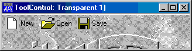

| Applies To: | Animation | ButtonEdit | ToolControl |
Description
The Transparent property specifies whether or not a ToolControl is transparent.
Transparent is a single number with the value 0 (the default) or 1.
If Transparent is 1, the visual effect is as if the ToolButtons (and other controls owned by the ToolControl) were drawn directly on the parent Form as illustrated below.
